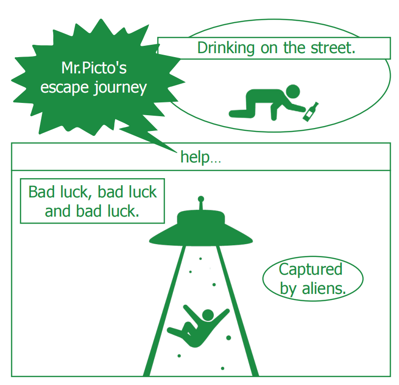
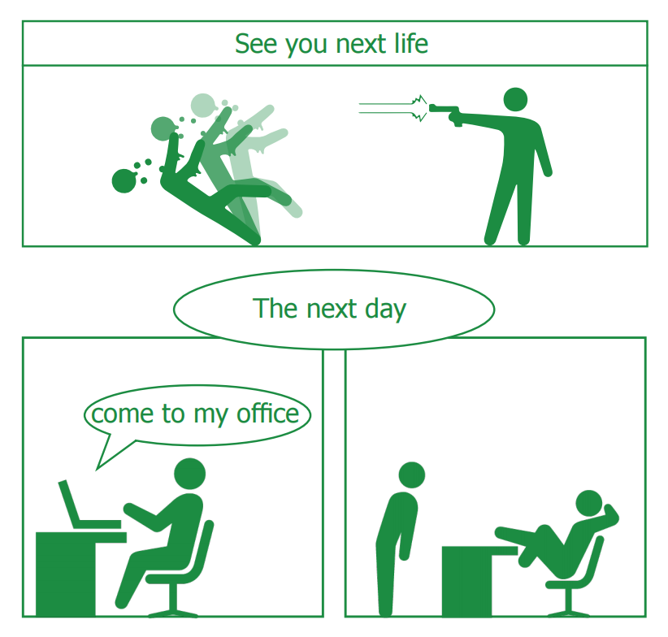

Origin
I accidentally saw a post, and someone asked, "Does anyone know the name of the safe evacuation of the little green person?" Another person replied, "Mr. Picto." This post attracted me and prompted me to look up the information. This can be traced back to the 1970s, when several large fires broke out in Japanese buildings, and the fire department believed that there was a lack of a prominent sign that could evacuate people in emergency situations, transforming it into a sign for mass mobilization. So Mr. Picto was born.
Part1
Part2
Part3
Part4
Part5
Part6
Part7
Part8
Part9
Part10
Part11
Part12
Part13